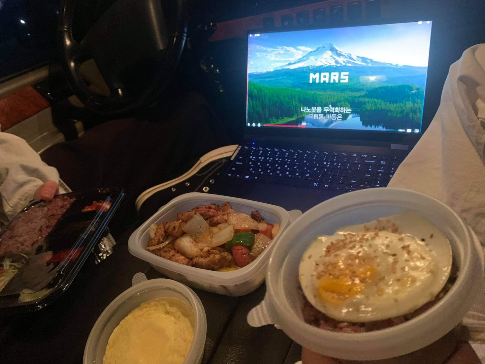
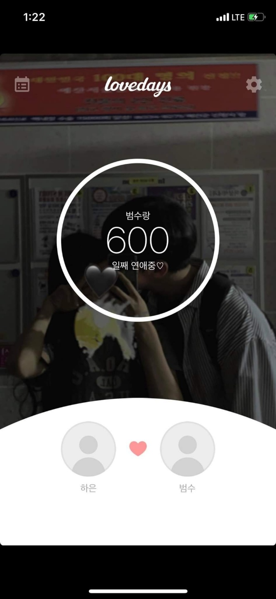

후하 드디어 600일입니다 여러분 ~ ~ ㅋㅋㅋ 하은아 편지는 잘 읽고있어? 음 편지라고 하기에도 좀 부끄러울 정도지만
이것 또한 나중에 좋은 추억으로 남을것임을 확신하며 한글자 한글자 열심히 쓰고있다
우리 600일에 무얼했나 생각해보고 갤러리도 다 뒤지고 카톡 내용까지 뒤져보았지만.. 아무리 생각해도 그냥 평범한 데이트를 했다는 것 밖에 알아내지 못했어.. ㅜㅜ 미안해
하지만 그래도 평소와는 조금 다른 평범한 데이트였달까 ㅎㅎ 우선 점심시간 정도에 만나서 같이 밥 먹구 돌아다니고 카페도 가고.. 정말 평범한 데이트였지 ㅎㅎ
이렇게만 보면 정말 평범했겠지만 그래도 저녁이 다 되어서 충남도서관 주차장에 차를 대고 차에서 영화 봤었지 제목이 승리호였을거야 넷플릭스로 봤는데 진짜 생각보다 너무 재밌더라
그리고 영화만 봤더면 좀 아쉬우니 바로 배달의 민족을 켜서 삼겹살 도시락을 시켰었지ㅎㅎ 그때도 지금처럼 메뉴고른다고 하루종일 찾아보다 결국 하은이가 정하는대로 먹기 ㅋㅋㅋㅋㅋ
아 다시 생각해도 참 색다르고 재밌었어 ㅎㅎ 양이 조금 아쉬웠지만 하은이가 맛있게 먹어줘서 기분이 정말 좋았어 ㅎㅎ 그렇게 영화도 보고 배도 불렀다 차에서 히터틀면서 누워있었지 ㅎㅎ
자동차영화관에서 영화보는걸 해보고 싶다고 생각했는데 조금은 다르지만 재밌었어 ^8^ 또 나 차박도 해보고싶어 ㅜㅜ 다음에 렌트하면 한번 가보자잇
이렇게 쓰고 보니 우리 정말 도서관데이트 많이 했다ㅋㅋㅋㅋ 재밌었는뎅 근데 생각해보니 내포에서 항상 놀때면 도서관 아님 영화 볼링 정말 별거 없었는데 하은이 어떻게 버텼나 싶어..
우리 나 휴가나오면 놀러가자 ㅎㅎ 부산도 가보고 싶고 제주도도 가고싶어 ㅜㅜ 나 px도 최대한 안가고 월급도 잘 적금하고 모을테니까 그때 정말 나랑 같이 놀러가주세요 하은님 ㅜㅜ
뭔가 벌써 김칫국부터 마시는것 같지만 나 휴가나오거나 제대하고 하은이랑 여행갈 생각만 하면 너무 설레 진짜.. 나 12월 27일에 전역인데 그때 겨울이니깐 스키장 가자 ㅎㅎ
하은이한테 스키 좀 배워야겠엉 ㅋ 얼마나 잘 타는지 보장 그때쯤이면 같이 놀러가는거 허락해 주실려나... ㅜㅜ 죄송하고 감사드리지만 허락해 주셨으면.. !!
암튼 스키장을 가던지 아니면 제주도를 같이 가던지 나랑 같이 힐링하러 떠나자 하은이랑 나 고생했다고 서로 축하도 하고 위로도 하고 진정한 성인으로서 출발을 다짐하며 여행을 갑시닷
정말 나는 하은이와 다른 시간을 겪겠지만 하은이는 혼자서 큰 사회의 벽을 느끼고 있겠지.. 내가 전역하고 나서 하은이보다 사회의 대한 걱정과 비전이 조금 늦게 형성될텐데
그때는 하은이가 날 이해해줬으면 좋겠어 거진 2년이라는 시간동안 아무런 준비도 못했기에 느린거지 한심하다고 생각하면 안된다 증말 ㅡㅡ 뭐 난 꿈이 크기에 군대에서부터 준비할테지만 ㅋ
정말 우리 다시 사회에서 보는 날에는 같이 살아갈 미래에 대해 잘 준비하고 서로를 많이 도와주자
아 근데 나 제대하면 돈 좀 모았겠지? ㅋㅋ 제주도 한달살기 내가 정말 할 수 있을까? 만약 한다면 종강하고 여름때 가겠지 ㅎㅅㅎ 그때 하은이는 정말 바쁠때지만 쉬고싶다면 나한테 놀러왕
아 맞다 우리 누나를 보면서 말해주는건데 하은이 어떤일을 하고 살지 잘 생각해보고 시간의 여유가 조금이라도 있을때 관련된 자격증을 따라고 충고해줄게..
뭐 솔직히 이미 준비할라고 하고있는걸 보니 안심이긴 한데 정말 우리 누나 자격증 시험본다고 시험 개많이 있는거 보면 하은이도 4학년때 조금이라도 편하라고 필요한 자격증 미리 따라고 말해준다ㅋ
난 거기서 영어랑 수학 그리고 경제 공부를 해볼까 생각도 하지만 뭐 상병쯤 되면 나태해진 정범수는 하지 않겠지 ㅋㅋ 뭐 그래도 운동은 꾸준히 해보도록 노력할게
나중에 이걸 보면 참 웃기겠다 ㅋㅋ 편지를 보면 좀 짧은 편지도 있겠지만 어쩔 수 없어ㅜㅜ 이게 다 정범수가 멀리 놀러가지 못한 탓이니.. 미안하오
아무튼 너무 사랑하고 고마운 하은이 재미있는 학교생활이 될 수 있을면 좋겠고 잘 준비해서 좋은 성적얻길 바랄게 항상 응원하고 사랑한다 유하은 ㅎㅎ
 